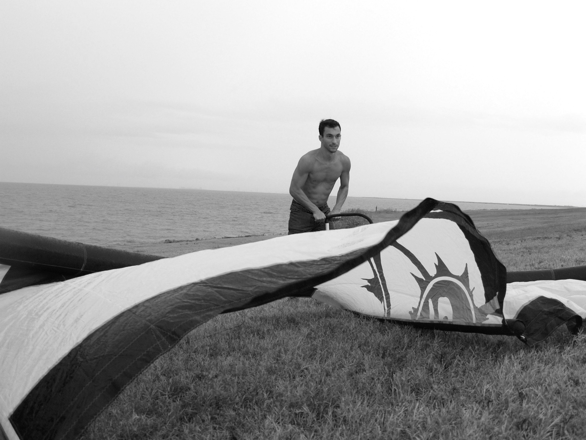
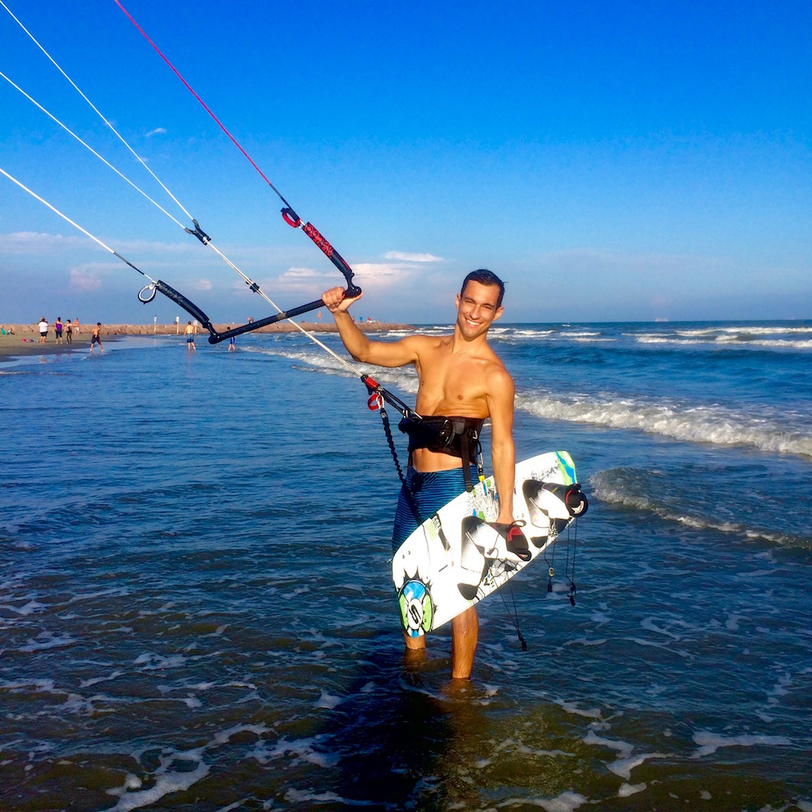
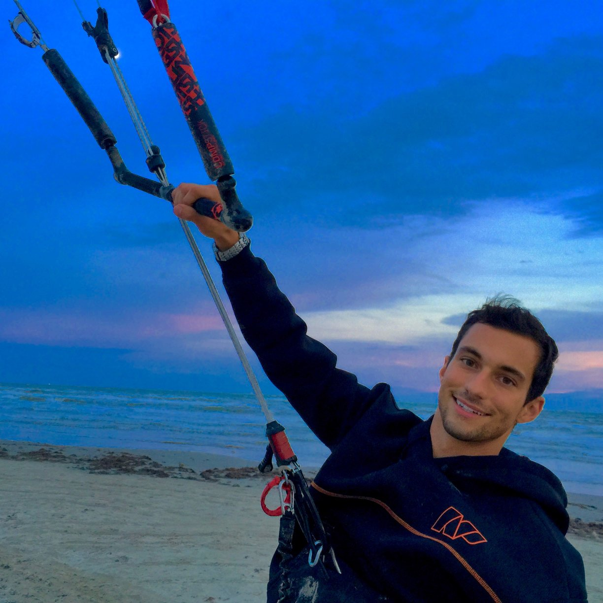

Kiteboarding
I started kiteboarding 2 years ago and I love it. I have 3 Slingshot kites: a 10m Rally, 14m Rally, and a 17m Turbine. I currently ride a Slingshot Misfit with Liquid Force boots, but I am hoping to get a Slingshot Angry Swallow soon. I started kiteboarding with in interest in wakestyle but lately I have acquired a taste for surfing. Something about riding the waves feels awesome in a way that is hard to put in words.
- 
Summer Day
- 
Winter Night
Day or night, hot or cold, if there is wind you can find me out on the water!